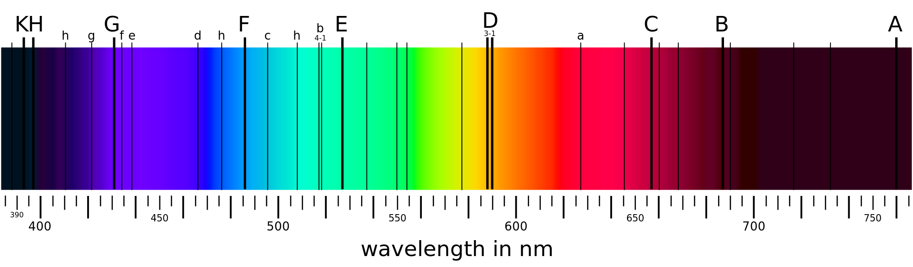
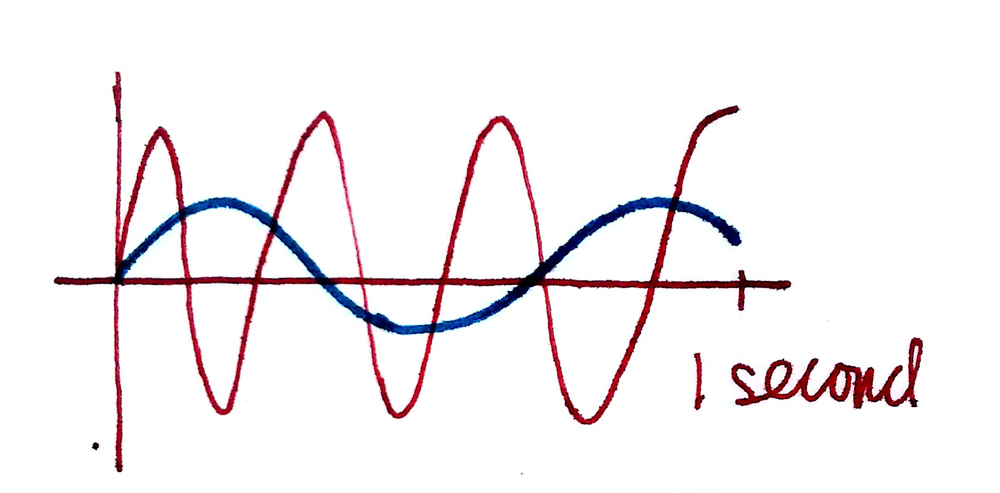
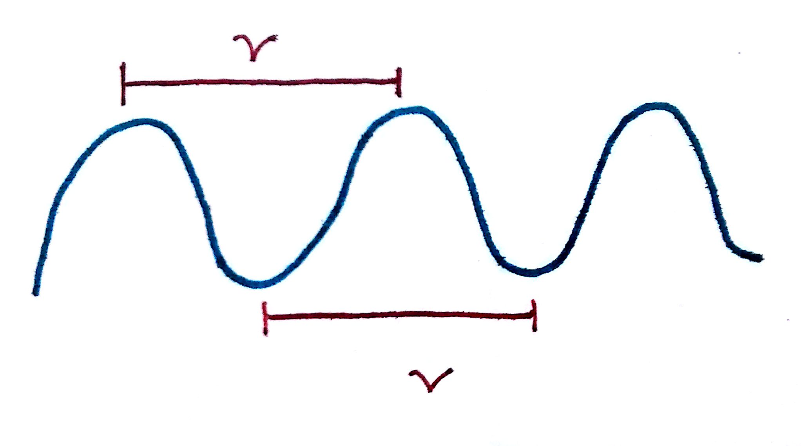
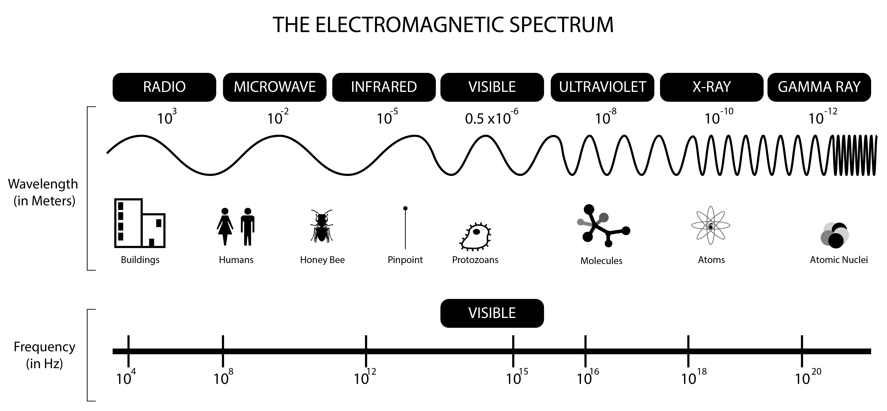
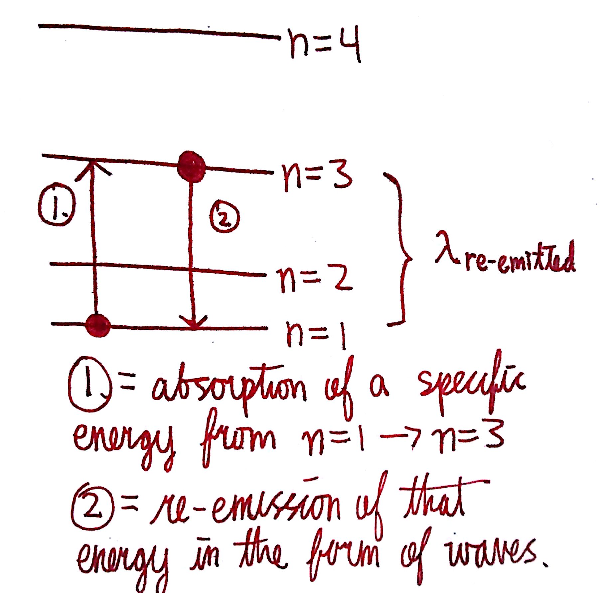
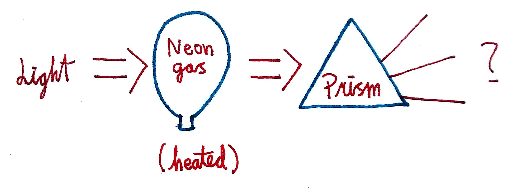

Waves
Waves are an oscillating function. In laymen terms, this means that a wave is something that goes up, then down, back up again, and back down again. We can describe waves by 3 properties: the wavelength `(lambda)`, frequency (`nu`), and speed. The relationship between these properties is given by the following equation:
`lambda*nu=c`
`lambda` is in units of `"m"` (commonly given in `"nm"`)
`nu` is in units of `s^-1`
`c` is the speed of light which is `3.00*10^8 "m"/"s"`
Let's describe these terms so that we have a better idea of what's going on.


1. Frequency describes how the number of times a wave repeats in 1 second. The higher the frequency, the higher the energy of the wave. In the top picture, the red wave repeats more times in 1 second than the blue wave does. Therefore, the red wave has a higher frequency.
2. Wavelength describes the distance between the peaks of a wave. The longer the wavelength, the lower the energy of the wave. The bottom picture is a visualization of wavelength.
3. The speed of light (`c)` is a constant. This means it never changes and will be the same for every problem and in every equation. It is a property of our universe.
4. Frequency and wavelength are inverse properties, meaning that as one increases, the other decreases proportionally.
Consider this set of waves. Which one has the highest frequency? Longest wavelength? Highest energy?

The red wave has the longest wavelength because the distance from peak to peak is the longest. Consequently, it has the lowest energy. The blue wave has the highest frequency because it repeats the most times. Since frequency corresponds to energy, the blue wave is the wave with the highest energy. The higher the frequency, the shorter the wavelength. The longer the wavelength, the lower the frequency. We can see this in the relationship:
`lambda*nu=c`
`lambda=c/nu`
Waves are important because light is a wave. So are microwaves, x-rays, etc. The entire range of waves is described by the electromagnetic spectrum:

Notice that the region of visible light is only around `2.3%` of the entire spectrum! How mind-boggling is it that there's an entire 97.7% of waves that we're not seeing?! Imagine being able to see microwaves, or UV (ultraviolet) waves. Walking outside would suddenly be a terrifying experience! Wouldn't it be cool to be able to see wi-fi?
Excitation of `e^-`
Now that we know about energy levels and wave relations, we can discuss about what it means to excite `e^-`. In all the previous examples, it was implied that the `e^-` were in the ground state. This means that the atom wasn't doing anything, and nothing was being done to the atom, it was just there. `e^-` can become excited by absorbing energy, whether through heat, light, or any other forms that exist. When it comes to light, the smallest amount of energy that exists is called the quantum, and is described by Planck's Constant (h):
`h=6.626*10^-34 J*s`
This is a really interesting concept to think about! Instead of light being an uninterrupted stream, it's actually a highway of little packets of energy, called quantum. This means that all energy has to be some multiple of Planck's Constant.
We say that an electron is in the excited state when it has absorbed energy, and in the ground state when the electron has released all of its energy.We can express the total energy by this equation:
`DeltaE=h*nu`
If we're given the frequency of a wave, we can calculate how much energy an electron absorbs by absorbing said wave. Notice that we can do the same for wavelength if we plug in the relationship given in the first section:
`DeltaE=(h*c)/lambda`
Wave-Particle Duality of Light
The title is a fancy way of saying that light sometimes behaves like a wave, and other times like a set of particles. This is described in the de Broglie Equation
`lambda=h/(m*v)`
`lambda` is in units of `"m"`
`"v"` is velocity, in units of `"m"/"s"`
`"h"` is Planck's Constant, `6.262*10^-34 "J"*"s"`
`"m"` is the mass of the object, in `"kg"`
Let's do a few problems to illustrate the significance of this equation:
If unit conversions are new or confusing, check out this link
Dimensional Analysis
#1. Find the wavelength of an electron (`"m"=9.1*10^-31 "kg"`) travelling at `v=3*10^6 "m"/"s"`
We can solve for the wavelength just by plugging these values into the de Broglie equation.
`lambda_e^-=(6.626*10^-34 "J"*"s")/((9.1*10^(-31) "kg")*(3*10^6 "m"/"s")`
Let's make sure the units cancel out first. Recall that `"J"=("kg"*"m"^2)/"s"^2`. Therefore, the units on top simplify to:
`"J"*"s"=((("kg")*"m"^2)/"s"^2)*"s"=(("kg")*"m"^2)/"s"`
The units on the bottom remain the same. Therefore, the units become:
`((("kg")*"m"^2)/"s")/((("kg")*"m")/"s")="m"`
Since wavelengths are in units of `"m"`, this is good. Now we can just plug the numbers into our calculator and see what we get
Answer: `lambda_(e^-)=2.43*10^(-10) "m"`
Let's look at a similar problem and then compare the answers.
#2. Find the wavelength of a soccer ball (`"m"=0.43 "kg"`) travelling at `v=30 "m"/"s"`.
`lambda_(sb)=(6.626*10^(-34) "J"*"s")/((0.430 "kg")((30 "m")/"s"))`
Answer: `lambda_(sb)=5.14*10^(-35) "m"`
Notice that the wavelength of the soccer ball is around `10^25` times as small as the wavelength as the electron! This brings us to an important conclusion: The larger and slower an object is, the less wave-like the behavior of the object will be. This is why you don't see soccer balls oscillating, or tennis balls looping up and down mid-air. Only at really small masses and high velocities do wave-like behaviors emerge.
Atomic Spectra
We're going to refer to the Bohr Model of the atom for visualization purposes:

We have certain energy levels described by the principle quantum number, `n.` The larger the quantum number, the larger the energy of the orbital. It turns out that when `e^-` are excited, they excite into higher energy levels. For example, if I excite a valence electron of Li, it can go from n=2 to n=3! We say that the `e^-` jumps because the `e^-` goes directly from one energy level to another; it cannot exist in between the energy levels. Each jump in energy level corresponds to a different specific energy. In order to excite an electron from one energy level to another, the electron will absorb the exact amount of energy corresponding to the energy levels. If the `DeltaE` between n=1 and n=2 is `15 eV`, then the electron will only absorb `15 eV`, not `14.9 eV` or `15.1 eV,` but only the specific amount. This is due to the quantized nature of energy.
After an electron becomes excited, it re-emits the energy that it absorbed in the form of a wave. This is because `e^-`, just like humans, like to be at the lowest energy state; given the opportunity, many of us would love to just lay in our beds and do nothing. `e^-` are the same way. The specific wavelength emitted corresponds to the amount of energy the electron absorbed initially. Color is a result of `e^-` emitting a specific wavelength within the region of visible light.

The diagram to the left illustrates this. In step 1, the electron absorbs a quantized amount of energy that allows it to jump from n=1 to n=3. In step 2, the electron falls back down from n=3 to n=1 and emits that energy in the form of a wave. If that wave corresponds to the region of visible light, then we see the wave as color. Note that the initial energy absorbed in step 1 can be in the form of anything i.e heat, but the final emission is only in the form of waves. Glow in the dark objects operate on this principle. Inside these objects are phosphorescent materials that make the drop from excited state to ground state take a longer time than usual. This allows the emission of light to be sustained, and explains why they must be held up to light for a period of time before they'll glow. Similarly, glowsticks operate through chemical energy. By snapping the stick, one is breaking a packet that contains some chemicals that'll react and release chemical energy. This chemical energy is then absorbed and emitted, providing for color.
What's interesting is that the `DeltaE` for different elements are different. The `DeltaE` for n=1 to n=2 for hydrogen is different from the `DeltaE` of the same jump for boron, which is different from that of chlorine. This means the every element will absorb and emit a different wavelength of color. Prisms allow us to see how exactly different these wavelengths are. When we shine light through a prism, it simply separates the wavelengths of visible light so that we see a rainbow.
Imagine that we had neon gas. We're going to excite the `e^-` by heating them up and then we shine that light through the gas and into a prism:

What we get is something like this:
Why do you suppose this is? Remember that `e^-` of a specific element will only absorb a certain quantized amount of energy. That energy will then be emitted in the form of light. When there's no gas in front of the prism, the entirety of light goes through. When there is an elemental gas however, some of the light is absorbed by the gas. The light that passes through will therefore be missing a few wavelengths corresponding to the wavelengths absorbed by the gas. This spectrum is called the line spectrum or Emission/Absorption Lines and is unique to every element. Think of the emission lines as the fingerprints of elements.
Emission/Absorption lines are what we use to determine what elements exist in places that we're not able to physically venture to. For example, we're able to tell elemental composition of the sun by looking at the emission lines of the sun's light. Chances are, we won't be able to go to the sun directly anytime soon and perform tests on the elements present on the surface due to the sun's temperature, but we can tell just by reading the line spectra.
The picture I used for the front page of the website demonstrates the same principle of emission colors:
Each flame corresponds to a different metal being heated. Since each element will release a different wavelength of light after being excited, the colors will be different. This is called a flame test and is sometimes used to identify unknown metal ions of solutions.
Let's end this section with a nice quote by Democritus which bears relevance to what we've covered in this section:
"We think there is colour, we think there is sweet, we think there is bitter, but in reality there are atoms and a void."
Summary
1. Waves oscillate and can be described by wavelength (`lambda`), frequency (`nu`), and speed (v).
2. The higher the frequency of a wave, the shorter the wavelength, and the higher the energy.
3. The electromagnetic spectrum shows the entire range of waves. Visible light is only a small portion of the entire spectrum.
4. Light is quantized, meaning that it exists only in multiples of Planck's Constant.
5. Light is a wave.
6. `e^-` will always seek to return to their ground state where they're in the lowest form of energy.
7. `e^-` become excited by absorbing a quantized amount of energy, then emitting that energy in the form of waves.
8. Color is the result of energy emission by `e^-`.
9. Line spectra are the fingerprints of elements. Each element has a unique line spectra.
Fun Facts
1. Why is the sky blue during the day and red during sunrises and sunsets?
This phenomena is due to something called Rayleigh Scattering. Rayleigh Scattering says that the intensity of light is proportional to the inverse wavelength to the 4th power, or `I=1/(lambda^4)` . This means that shorter wavelengths are more intense than the longer wavelengths. Since blue is on the shorter side of the spectrum, blue light is more intense in the sky. In essence, the atmosphere scatters the shorter wavelengths more, so we see them more.
During sunrise and sunset, the sun is at its furthest and thus the light has to travel a longer distance to reach our eyes. Since its further, there is more time and distance for blue light to be scattered. The result is that by the time the light reaches us, all of the short wavelengths have been scattered away and only the longer wavelengths, such as red, are seen.
#2. Hit by waves
We're constantly being hit by waves (wi-fi, radio, sound, etc), but fortunately most waves that hit us do not have sufficient energy to harm us. Microwaves and radio waves have long wavelengths and therefore low energy. Gamma-rays are on the opposite side of the spectrum and have a very short wavelength corresponding to a very high energy. It is for this reason that gamma-rays are dangerous to humans whereas microwaves are not. X-rays are high energy and explain why we have to wear heavy lead jackets when taking x-rays: the lead is able to block the x-rays from coming into contact with us in places they're not intended to. UV rays from the sun have enough energy to harm us, but it takes standing in it for a duration of time without sunblock before they can do any lasting damage. Microwaves and radio waves are the waves we're most familiar with, so it's good to know that they're docile (if a wave can ever be considered docile).